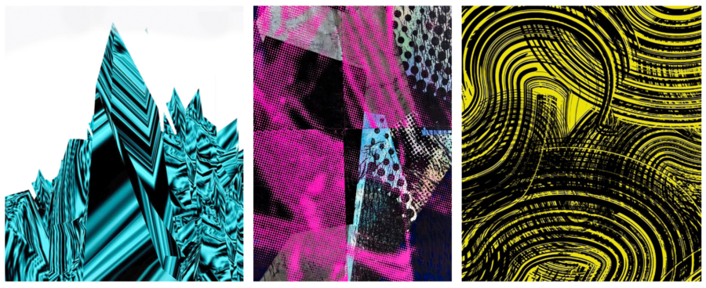

Walldrawings | Friedhard Kiekeben and Maria Burundarena
The Evanston Art Center (EAC) is excited to welcome the public to our upcoming exhibition, Walldrawings | Friedhard Kiekeben and Maria Burundarena. The exhibition will be on display from April 25 – May 17, 2026, with an opening reception on Sunday, April 26 from 1-4pm that will be free and open to the public.
Walldrawings | Friedhard Kiekeben and Maria Burundarena creates immersive spatial experiences for the viewer through digital wall works made on inkjet-printed paper and pasted vinyl, The works invite contemplation and a multiplicity of views and readings. Artist Maria Burundarena was invited to create a dialogue with these works through reflective and mirrored spaces, LED light intervention, and pillar wrappings throughout the gallery.
Walldrawings | Friedhard Kiekeben and Maria Burundarena will be exhibited in the First Floor Gallery of the Art Center. The opening reception is free and open to the public. This exhibition is partially funded by the Illinois Arts Council, a state agency, and the EAC’s general membership.
Evanston Art Center, a nonprofit 501 (c)(3) organization, is dedicated to fostering the appreciation and expression of the arts among diverse audiences. The Art Center offers extensive and innovative instruction in broad areas of artistic endeavor through classes, exhibitions, interactive arts activities, and community outreach initiatives.
Evanston Art Center is located at 1717 Central St., Evanston, IL. Evanston Art Center Gallery Hours: Monday–Thursday, 9am–6pm; Friday, 9am–5pm; Saturday & Sunday, 9am–4pm. First and second floor gallery spaces are accessible. Limited free parking is available.